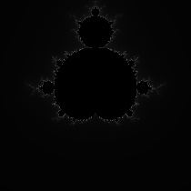

The mandelbrot set is a fractal pattern made by taking a bunch of points on the complex plane, and iterating \(z_{n+1} = z_{n}^2 + c\). If the point diverges to infinity, it isn't in the mandelbrot set. If the point stays bounded, it is in the Mandelbrot set. When you do that with a bunch of points between about \(\pm 1.5\) and \(\pm 1.5\), you will get the iconic shape. After this, you can look at increasingly small sections of it that almost always have something interesting going on.
In this section, I will write a minimal version in Python that works and outputs an image. It will end with this

The basic thing that you need to find a value at a point is to find the real and imaginary \((x\) and \(y)\) values at a point. Then, they are added to a complex number \((Z\)), which then gets squared. Then, you check if the value is diverging. I'm not smart enough to know a good way to do this, so I just check if it goes above a given value. If it hasn't been too many cycles and the value of \(Z\) isn't diverging, you add the values of the point again, square it, check, and repeat.
def bounded(c_real, c_imag, loops, top): '''this takes in a point called C and checks if it goes above [top] within [loops] iterations''' z_real = 0 z_imag = 0 for I in range(loops): # add the point to Z temp_real = z_real + c_real temp_imag = z_imag + c_imag # this is just squaring a complex number z_real = (temp_real * temp_real) - (temp_imag * temp_imag) z_imag = 2 * temp_real * temp_imag # check if the absolute value of the number goes above top if ((z_real * z_real) + (z_imag * z_imag) > top * top): # if it does, stop execution and say how long it took return i # if the point stayed bounded the whole time, return 0 to say how long it took return 0
This code is nothing too exciting. The only reason that it is in a function is so that code later on can use it over and over.
Using those equations to square \(Z\) isn't necessary, you could import cmath and have that do it for you, but its just a way to show that complex numbers are nothing scary.
This section is just going to have some basic variables that you can mess around with to change the bit of the mandelbrot set you want to see. Then, it will loop over the points to show the bit of the mandelbrot set you have defined.
import numpy as np # the central point for the image real = 0 imag = 0 # how far along each part you want to see real_radius = 1.5 imag_radius = 1.5 # change this to vary how big you want the final image to be zoom = 70 # these use the parameters above to calculate the lowest and highest points on each axis low_real = real - real_radius high_real = real + real_radius low_imag = imag - imag_radius high_imag = imag + imag_radius # this calculates how many pixels the image will have width = int(2 * real_radius * zoom) height = int(2 * imag_radius * zoom) # makes an evenly spaced series of points along the real axis between the points reals = np.linspace(low_real, high_real, width) # goes over each of them for real in reals: imags = np.linspace(low_imag, high_imag, height) for imag in imags: # checks if the current point is in the mandelbrot set and then prints the result output = bounded(real, imag, 100, 1000)
The only reason for numpy is how easy it makes it to use linspace, if you want to make the program run slightly faster, you might be able to rewrite linspace yourself.
Be careful when increasing zoom!! The time taken to run this program is (roughly) proportional to the square of it
For this, I will be using the .ppm format because it is really easy to use and you don't need anything else.
In short, there is a line to say that the colours are saved as text, then a line to say the width and height of the image, a line to say the maximum brightness of a pixel, and then RGB values of each pixel
...
height = int(2 * imag_radius * zoom)
print("P3")
print(f"{width} {height}")
print("255")
...
...
output = bounded(real, imag, 100, 1000)
print(f"{output} {output} {output}")
Running this code will output a bunch of numbers. Open up notepad (or any other text editor), paste those values in and then rename it to "image.ppm" and it should display an image (I've only tried this on a mac so far). It will be rotated \(90^\circ\) from what it should be, but you can change this by chaning the order of the for loops.
To change what the rendering looks like, you can change the values at the top of the file. If you want to zoom in 10 times on the centre, divide the radii by 10 and multiply the zoom value by 10. To change the maximum number of iterations, change the third value in the call to bounded. To change the maximum value before the point is called bounded, change the fourth value.
The full code is avaliable on github here
This section is gonna assume a bit more technical knowledge
After playing around with my Python implementation, I was getting bored of it running so slowly. I tried implementing multiprocessing and this did result in an increase in speed, but not enough to be what I was looking for
When re-implementing everything in Rust, I had some requirements
Of these, number 2 would be the hardest to implement. 1 and 3 can basically be acheive by translating the code that I had from Python to Rust line by line. Functionality would be maintained and by virtue of rust being compiled and Python not, it would almost definitely run faster
My biggest problem would be the GUI, because I didn't know any Rust GUI libraries, and because I didn't know that much rust at the time I wasn't really in a good position to learn.
Because I already had a functional Python frontend, I could just send data from Rust to Python and not have to worry about anything. To do this, I decided to use UNIX sockets, because they were the first thing I came across and the TCP libraries in Python and rust worked with them on macos.
Once I had the renderer working in Rust and giving the same output as Python, I began sending the information from rust to Python. I struggled with this, because it was something that I was very unfamiliar with, I was teaching myself everything, and I was just getting to grips with rust.
The main challenge with this system was that to have everything work correctly, I had to start the Rust program, and then the Python program. If I wanted to change what I was looking at, I would have to shut down both of them, change the values and then restart both of them in order. Because of how the sockets worked, if I started them in any other order, the code wouldn't work.
Eventually, I managed to make a version that could send the data from Rust to Python and display them. Eventually, when I wanted to use buttons in the GUI, meaning sending data back from Python to Rust, this system became too complex, so with my newfound confidence in Rust, I decided to learn egui, a Rust library for graphical interfaces
At the end of this step of the project, I managed to acheive all of my goals. The only reason I took more steps was that I was still interested in the project, and I wanted to add more functionality
I chose to use egui because it is pure Rust, so any computer that I can compile Rust on will run my code with minimal complexity. With something like ImGui, I wasn't as sure.
Using egui means that data doesn't need to be transmitted between Rust and Python, so it should run faster. I think this was the case, but I don't have the original python code to test against. Once I could see an image, I wanted to be able to change the view quickly without having to close the window. For this, I added buttons to control x, y, window size, zoom and more.
While this version was significantly faster than the Python implementation, the performance did still suffer at times. As a solution, I once again turned to multithreading. The reasons were the same as before, it should be fairly simple to write a function that gets called multiple times on different bits of data, and then it all gets sent to one buffer to be rendered. Rust's threadpool system works for this use case, and using the multiple producer, single consumer method from the standard library allowed me to send data back to the main thread as necessary.
Because of how I implemented the check for if a value was bounded as a separate function, it allowed for some code to be reused. This meant that the new functions could be added, tested and verified as stable faster. In addition to this, it makes it very easy to swap between methods of checking if a value is bounded. One other method I used was finding the gradient of the point, and if the rate of change exceeded a value, it was bounded. In other words, \(\frac{dZ}{dn} > \text{val}\) meand the point isnt bounded.
Adding multithreading also adds some overhead, meaning that for very small images, single threaded rendering is faster due to the smaller amount of overhead.However, the multithreaded renderer runs faster for anything of a reasonable size on my 2014 macbook. By reasonable size, I mean that you will actually be able to make out any detail.
With any floating point number, there are essentially two parts, the mantissa and the exponent. These are basically \(A\times 10^B\), where \(A\) is the mantissa and \(B\) is the exponent. This isn't quite how it works, but it is a close enough approximation. In 32-bit floating point numbers in a computer, there are 8 bits for the exponent, 1 bit for the sign, and 23 bits for the mantissa. This allows both very small and very large numbers to be represented with reasonable accuracy. All a 64-bit floating point number means is that opposed to being stored in 32 bits or 4 bytes, 8 bytes and 64 bits are used. This allows for more accuracy and more numbers that can be represented because the mantissa is now stored in 52 bits and the exponent in 11 bits.
Because of the nature of a Mandelbrot renderer, extremely small numbers have to be used to do deep zooms. There are videos online of people doing zooms to over \(10^{1000}\) magnification, so the difference between one pixel and the other on either the real or imaginary axis will be tiny. The way this manifests itself in my renderer with 64-bit floating point numbers, is that black lines sometimes appear. What these mean is that